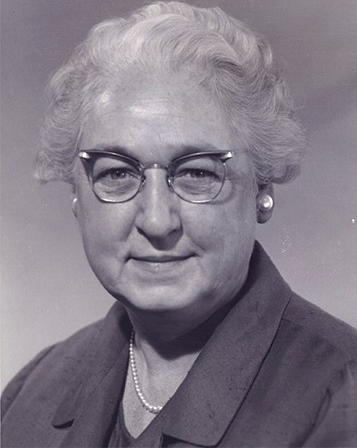
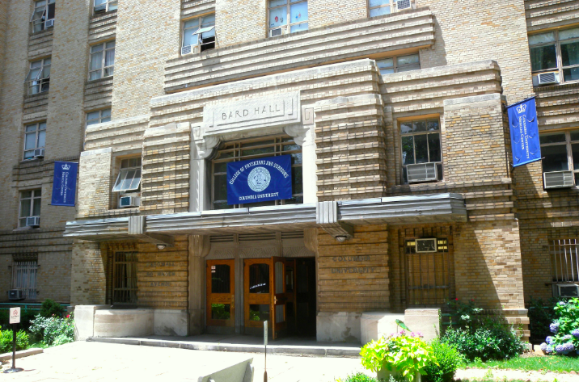

Biography
Virginia Apgar was the first women to become a full professor at Columbia University of Physicians and Surgeons. . She designed the first method for evaluating the newborn's transition to life outside the womb. Throughout her whole highschool experience she was determined to be a doctor. She was inspired by her family, her dad had many scientific hobbies, and both of her brothers were ill in there childhood, causing her oldest to pass away from tuberculosis. She also atteneded Mt. Holyoke joining the orchestra because of her violin skills. She ended up graduating this college with a major in zoology. After this is when she went to  Columbia University of Physicians and surgeons and ended up graduating fourth in her class. After struggling to find a training program when she completed her surgical residency, so then later decided to go back to Columbia University as the director of the division of anesthesia and as an attending anesthetist. She decided to go back to college after training with with Dr. Ralph Waters' department of anesthesia, the first in the United States, at the University of Wisconsin-Madison . As time went on she accomplished many other great things, but as things started to settle down she earned a master's degree in public health from the Johns Hopkins University. After this she decided not to return to academic education and later on devoted herself to the prevention of birth defects through public education and fundraising for research.